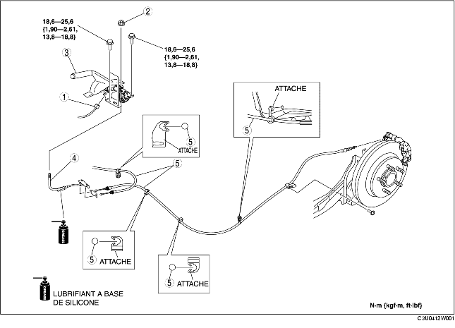

1. Déposer le silencieux principal. (voir la section DEPOSE/REPOSE DE SYSTEME D'ECHAPPEMENT [ZJ, Z6].) (voir la section DEPOSE/REPOSE DE SYSTEME D'ECHAPPEMENT [LF].)
2. Déposer l'isolateur thermique.
3. Déposer la console. (voir la section DEPOSE/REPOSE DE CONSOLE.)
4. Déposer les différents éléments selon l'ordre indiqué dans le tableau.
5. Pour la repose, suivre l'ordre inverse de la dépose.
6. Après la repose, inspecter la course du levier de frein de stationnement. (voir la section REGLAGE DE LEVIER DE FREIN DE STATIONNEMENT.)

.
|
1
|
Connecteur de contacteur de frein de stationnement
|
|
2
|
Ecrou de réglage
|
|
3
|
Levier de frein de stationnement
|
|
4
|
Câble de frein de stationnement avant
(voir la section Note sur la repose de câble de frein de stationnement avant.)
|
|
5
|
Câble de frein de stationnement arrière
(voir la section Note sur la repose de câble de frein de stationnement arrière.)
|
1. Faire passer le câble de frein de stationnement arrière à l'intérieur du faisceau de câblage du capteur ABS de vitesse de roue arrière, comme indiqué dans l'illustration.
2. Reposer le câble de frein de stationnement arrière.
1. Reposer le câble de frein de stationnement avanten orientant le repère de l'égalisateur vers le bas du véhicule.